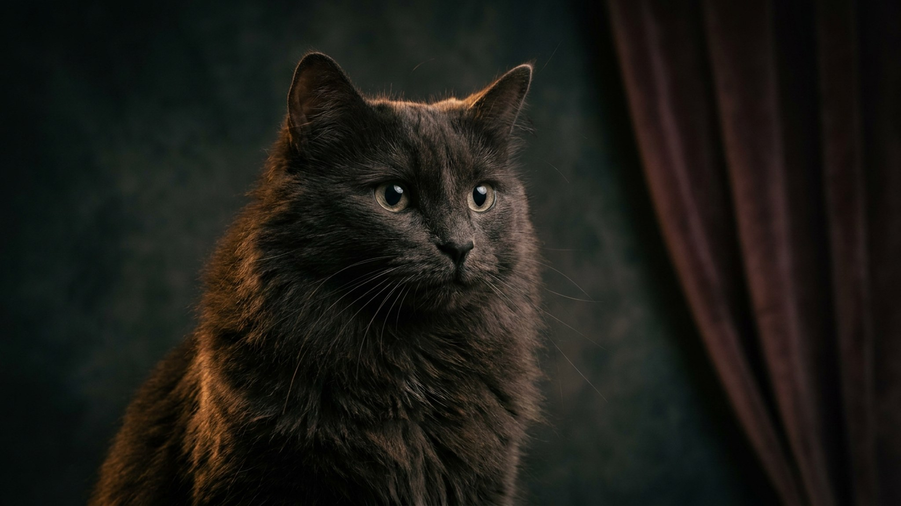

В 1990-х эту породу считали исчезающей — питомников почти не осталось. Сегодня шантильи-тиффани возвращается, и те, кто её нашёл, говорят об одном: кошка буквально ходит за хозяином по пятам и при этом почти не мяукает. Разбираем, чем она отличается от похожих пород, как устроен характер и чего требует уход за шерстью.
🐾 У вас шантильи-Тиффани?
AnimaLife соберёт уход под породу: к каким болезням есть склонность, что проверять по возрасту, чем кормить и когда пора к врачу. Бесплатно, прямо в мессенджере.
Собрать план ухода → Собрать в MAX →
У вас iPhone? AnimaLife есть в App Store
Шантильи-тиффани появилась в США в 1960-х годах. Первоначально её называли просто «иностранная длинношёрстная» — однородный шоколадный окрас и тип сложения не укладывался ни в одну существующую породу. Название Chantilly закрепилось в 1970-х, позже добавилось Tiffany — сегодня оба варианта используются параллельно.
Ключевые внешние признаки:
Шантильи-тиффани — одна из самых ласковых кошек среди полудлинношёрстных пород. Она следует за хозяином из комнаты в комнату, любит сидеть рядом, часто — прямо на коленях. При этом голос у неё тихий и мягкий: порода не требует внимания криком, а скорее тихо напомнит о себе прикосновением лапы.
Несколько важных черт характера:
Несмотря на длину шерсти, уход проще, чем кажется. Отсутствие плотного подшёрстка означает меньше колтунов и меньше линьки, чем у персидских кошек.
Шантильи-тиффани часто путают с бурмой (из-за шоколадного окраса) или с турецкой ангорой (из-за шелковистой шерсти). Разница в следующем: бурма — короткошёрстная и более активная, ангора — белая в классическом варианте и более самостоятельная. Шантильи-тиффани занимает свою нишу: полудлинная шерсть, насыщенный цвет и очень высокая привязанность к человеку.
Порода редкая — найти добросовестного заводчика в России непросто. Перед покупкой котёнка запросите документы на родителей и осмотрите условия содержания. Плановый осмотр у ветеринара после появления котёнка дома — обязателен.
Материал носит информационный характер и не заменяет очную консультацию ветеринара.
🐾 Ваш питомец — шантильи-Тиффани?
Заведите профиль в AnimaLife: приложение запомнит породу, возраст и вес и будет подсказывать по уходу именно для неё. Вопросы AI-ветеринару — круглосуточно и бесплатно.
Завести профиль → Завести в MAX →
У вас iPhone? AnimaLife есть в App Store
🐾 Понравился разбор?
Подпишитесь на канал — каждый день разбираем по одному тревожному симптому у кошек и собак: что в пределах нормы, а когда пора к врачу. Подпишитесь, чтобы не пропустить разбор, который может спасти здоровье вашего питомца.